Petunjuk Penggunaan
Tentang
PALM TREE Ground Control Station Simulator adalah sebuah simulator yang difokuskan untuk menganalisis manfaat dan efisiensi penggunaan robot lawn mower pada pengelolaan perkebunan kelapa sawit